Tutorial
In fact, when using the Vue.js framework, many editors are available, each with its own advantages. My top recommendation is Visual Studio Code, one of the most popular code editors today, which supports a wide range of extensions, such as Vue.js extensions, debugging, formatting, and more.
Next is Sublime Text, a lightweight editor that supports Vue.js syntax highlighting and extensions, making it suitable for quick code editing. Another option is Atom, an open-source editor developed by GitHub that also supports Vue.js plugins and some custom features. There are many other editors, but I won’t list them all here.
To start writing Vue.js applications in VSCode, you’ll need to install Node.js, as Vue.js relies on this environment. You can download and install it from the official Node.js website (https://nodejs.org/en).
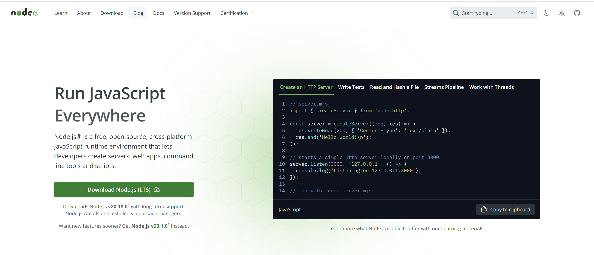After installation, open PowerShell or Command Prompt and enter the following command to check if Node.js has been installed correctly:
If the version information is displayed, the installation was successful. If the command is not recognized or Node cannot be found, it means Node.js was not installed correctly, or the path was not added to the system environment variables.
To check if it’s been added to the system environment variables, go to your desktop, select "This PC," right-click, and choose "Properties." Select "Advanced system settings," then "Environment Variables." In the "System Variables" section, locate "Path," select it, and either double-click or click "Edit." Then click "Browse." If installed on the C drive, the default location is `C:\Program Files\nodejs\`. If it’s elsewhere, you can manually find and paste the directory path. After that, click "OK" all the way through to save.
Once everything is set, restart your computer to apply the changes. After restarting, open PowerShell again and run:
If the version information is displayed, the setup is complete. If not, you may need to uninstall and reinstall Node.js.
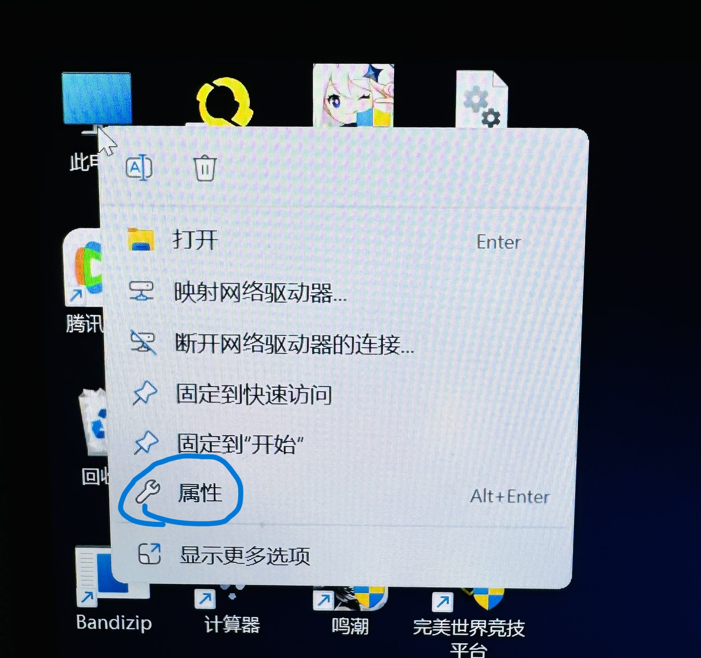 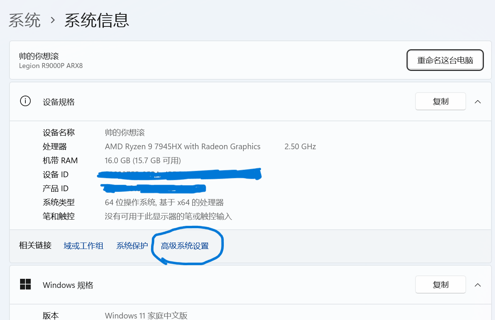 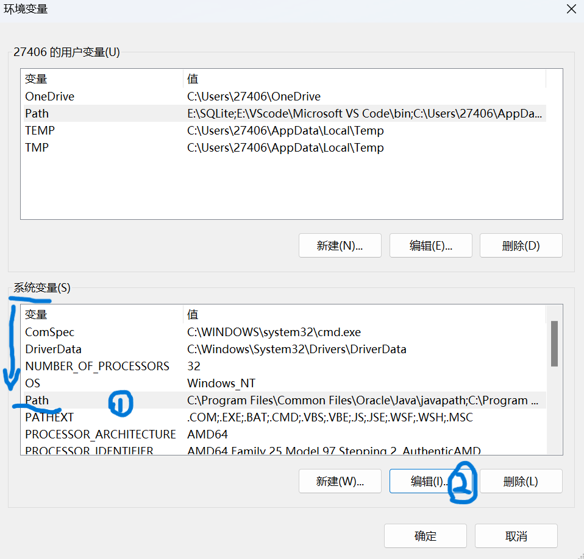
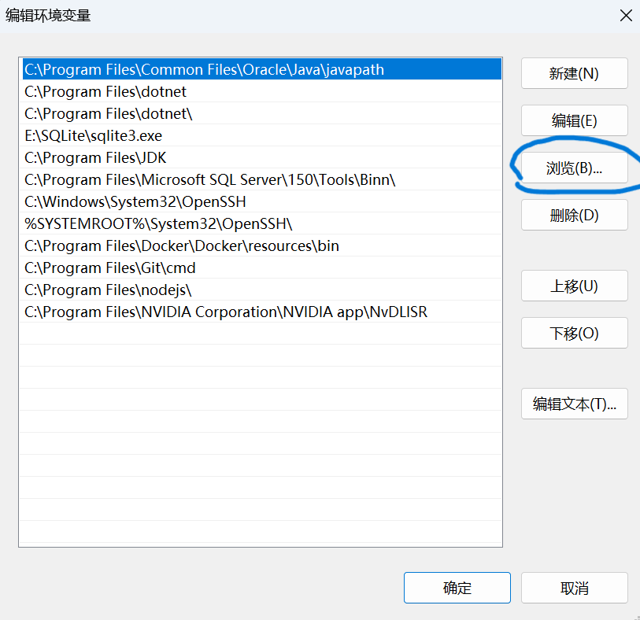
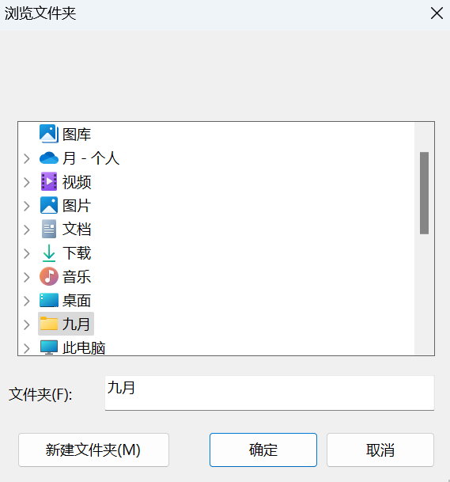
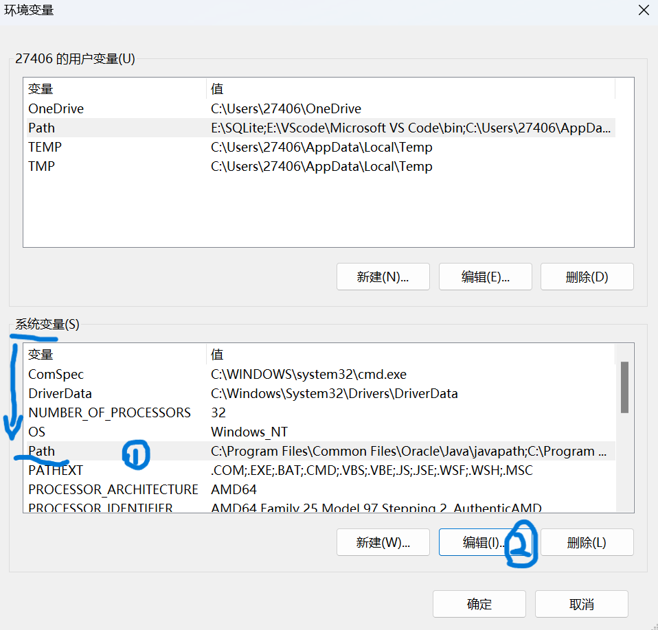
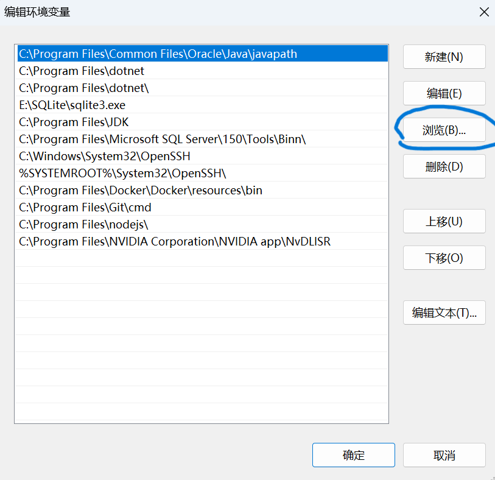
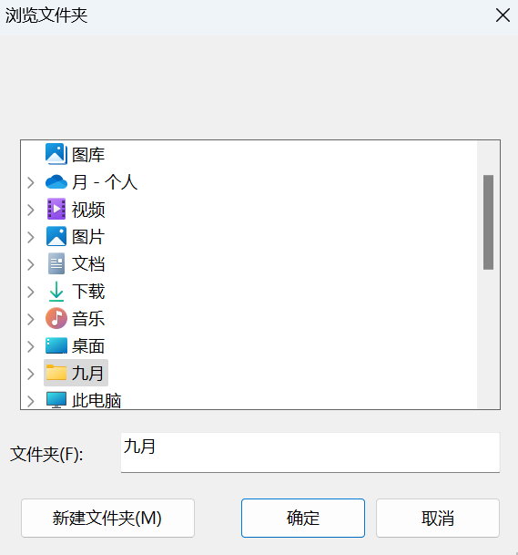
After setting up, you can use the Vue CLI to quickly generate a Vue.js template. Start by creating a new folder—I'll name it `my-vue-project`—and open this folder in VSCode. Open a new terminal and enter the following command to install Vue CLI globally:
Next, create a new Vue.js project by typing:
Here, I chose `vue-js` as the project name. If you encounter a message in the terminal stating that the system prohibits script execution, run PowerShell as an administrator and enter the following command to check the current execution policy:
If it displays `Restricted` or `RemoteSigned`, it means PowerShell doesn’t allow scripts to run by default. In this case, enter the following command:
This command allows PowerShell to run local scripts while requiring signatures for remote scripts, enhancing system security. After that, you can rerun the command:
This step defaults to Vue 3. If you have projects in older versions and want to continue with them, you can select the version accordingly. For this guide, we’ll proceed with the latest Vue 3.
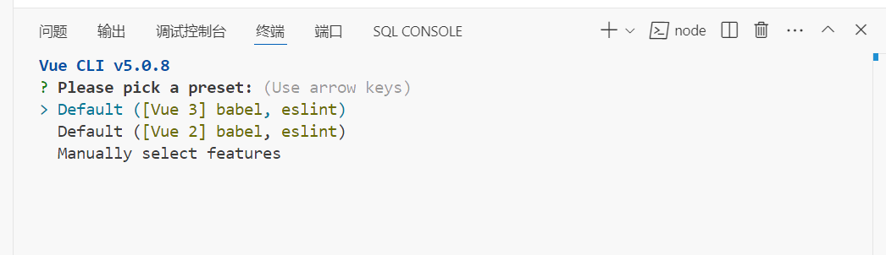 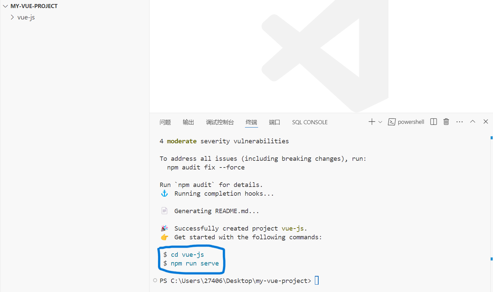 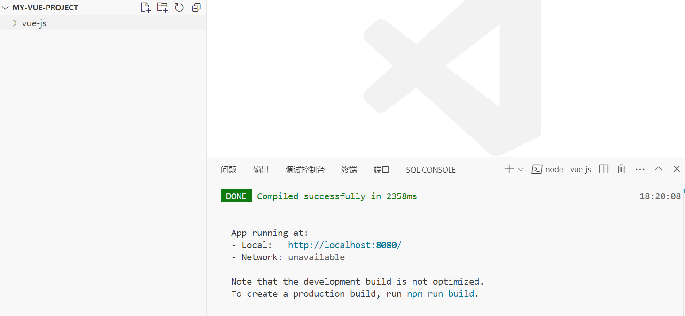The system will then guide you on how to run the project by executing a series of commands in the terminal.
Hold down **CTRL** and click the **Local** link provided in the terminal output to open and view the initial project page in your browser.
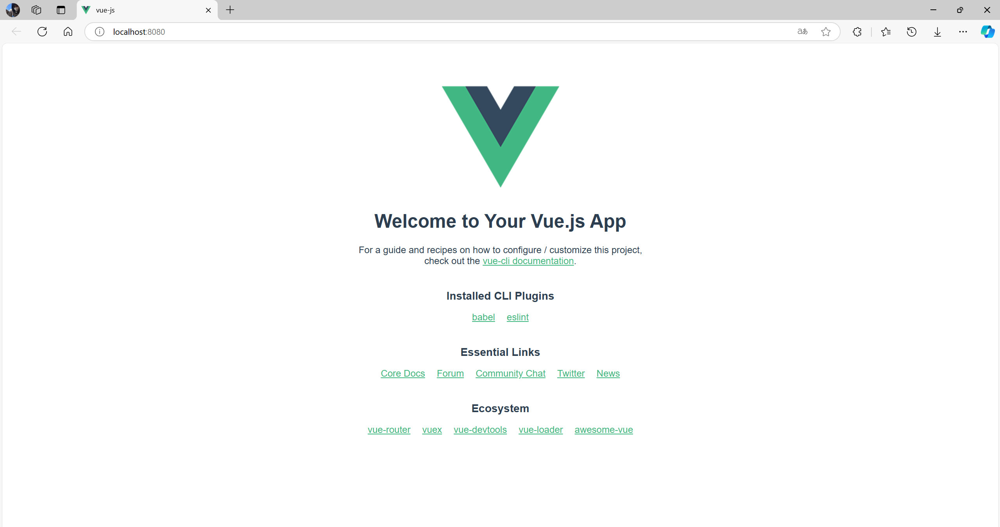This is the default project running page. Next, let’s look at how to set up and run our group project, "Calculator," and explore its project structure.
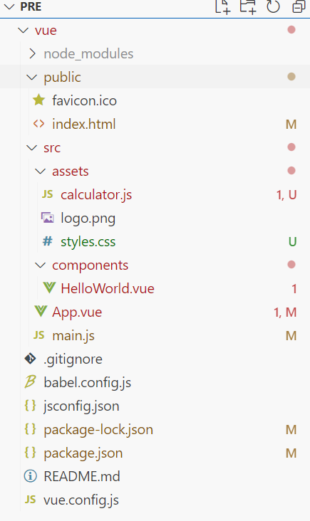The next is the content of index.html.
<!DOCTYPE html>
<html lang="en">
<head>
<meta charset="UTF-8" />
<meta name="viewport" content="width=device-width, initial-scale=1.0" />
<title>Calculator</title>
<link rel="stylesheet" href="./assets/styles.css" />
</head>
<body>
<div id="app"></div>
</body>
</html>***The next is the content of calculator.js in the `assets` folder.***
export const calculatorMethods = {
appendNumber(number) {
if (this.result === '0') {
this.result = number;
} else {
this.result += number;
}
},
chooseOperator(operator) {
if (this.result !== '') {
this.firstValue = this.result;
this.operator = operator;
this.result = '';
}
},
calculate() {
if (this.firstValue !== null && this.operator !== null && this.result !== '') {
this.secondValue = this.result;
const num1 = parseFloat(this.firstValue);
const num2 = parseFloat(this.secondValue);
switch (this.operator) {
case '+':
this.result = (num1 + num2).toString();
break;
case '-':
this.result = (num1 - num2).toString();
break;
case '*':
this.result = (num1 * num2).toString();
break;
case '/':
if (num2 !== 0) {
this.result = (num1 / num2).toString();
} else {
this.result = 'Error';
}
break;
}
this.firstValue = null;
this.operator = null;
this.secondValue = null;
}
},
clear() {
this.result = '0';
this.firstValue = null;
this.operator = null;
this.secondValue = null;
}
};***This is the App.vue file.***
<template>
<div id="app" class="calculator">
<h1>Calculator</h1>
<input type="text" v-model="result" readonly />
<div>
<button @click="appendNumber('7')">7</button>
<button @click="appendNumber('8')">8</button>
<button @click="appendNumber('9')">9</button>
<button @click="chooseOperator('/')">÷</button>
</div>
<div>
<button @click="appendNumber('4')">4</button>
<button @click="appendNumber('5')">5</button>
<button @click="appendNumber('6')">6</button>
<button @click="chooseOperator('*')">×</button>
</div>
<div>
<button @click="appendNumber('1')">1</button>
<button @click="appendNumber('2')">2</button>
<button @click="appendNumber('3')">3</button>
<button @click="chooseOperator('-')">-</button>
</div>
<div>
<button @click="appendNumber('0')">0</button>
<button @click="clear">C</button>
<button @click="calculate">=</button>
<button @click="chooseOperator('+')">+</button>
</div>
</div>
</template>
<script>
import { calculatorMethods } from './assets/calculator.js';
export default {
data() {
return {
result: '0',
operator: null,
firstValue: null,
secondValue: null
};
},
methods: calculatorMethods
};
</script>
<style scoped>
/* 样式部分已经放入 styles.css This part has taken into the styles.css*/
</style>***Finally, here is the main.js file.***
import { createApp } from 'vue';
import App from './App.vue';
const app = createApp(App);
app.mount('#app');***The resulting output is shown in the video below.***
Maybe in the GitHub can not support to take video, You can right-click and select to play on a new page. That's the complete tutorial on Vue.js. If you want to dive deeper into learning Vue.js, you can explore related resources on GitHub for further study.